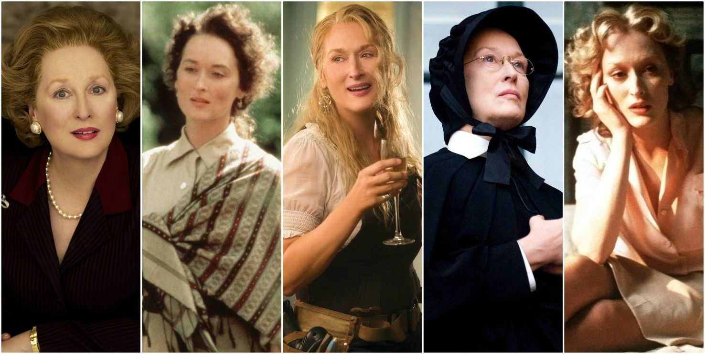

Una Cinéfila Curiosa
Desde que tengo memoria mi vida ha estado rodedada de películas, a veces me digo a mi misma que fácilmente lo que he aprendido, me lo ha enseñado la vida, tal vez por eso soy drámica frente a distintas situaciones, pero que más da. Entre risas puedo decir que hasta pudo criarme Meryl Streep.
Aunque ella es de las actrices más icónicas del cine, también hay otras actirces y actores que me han robado el corazón.
En esta página podrás encontrar mis películas favoritas en distintas categorías. Si quieres recibir notificaciones cada que suba una reseña por favor inscríbete en el formulario del menú.